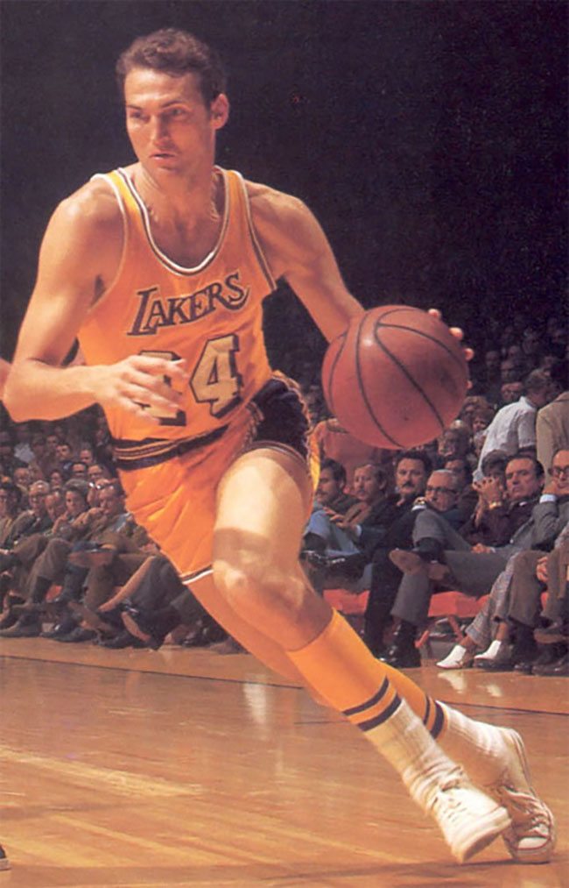

The Los Angeles Lakers are an American professional basketball team based in Los Angeles. The Lakers compete in the National Basketball Association (NBA), as a member of the league's Western Conference in the Pacific Division. The Lakers play their home games at Staples Center, an arena shared with the NBA's Los Angeles Clippers, the Los Angeles Sparks of the Women's National Basketball Association, and the Los Angeles Kings of the National Hockey League.[9] The Lakers are one of the most successful teams in the history of the NBA, and have won 16 NBA championships, the second-most behind the Boston Celtics.
The franchise began with the 1947 purchase of a disbanded team, the Detroit Gems of the National Basketball League (NBL). The new team began playing in Minneapolis, calling themselves the Minneapolis Lakers.[10] Initially a member of the NBL, the Lakers won the 1948 NBL championship before joining the rival Basketball Association of America, where they would win five of the next six championships, led by star George Mikan.[11] After struggling financially in the late 1950s following Mikan's retirement, they relocated to Los Angeles before the 1960–61 season.
Led by Hall of Famers Elgin Baylor and Jerry West, Los Angeles made the NBA Finals six times in the 1960s, but lost each series to the Celtics, beginning their long and storied rivalry. In 1968, the Lakers acquired four-time NBA Most Valuable Player (MVP) Wilt Chamberlain, and won their sixth NBA title—and first in Los Angeles—in 1972, led by new head coach Bill Sharman. After the retirement of West and Chamberlain, the team acquired Kareem Abdul-Jabbar, who also won multiple MVP awards, but was unable to make the Finals in the late 1970s.
The 1980s Lakers were nicknamed "Showtime" due to their fast break-offense led by Magic Johnson. The team won five championships in a nine-year span, and contained Hall of Famers Johnson, Abdul-Jabbar, and James Worthy, and was led by Hall of Fame coach Pat Riley. After Abdul-Jabbar and Johnson retired, the team struggled in the early 1990s, before acquiring Shaquille O'Neal and Kobe Bryant in 1996. With the duo, who were led by another Hall of Fame coach Phil Jackson, the team won three consecutive titles between 2000 to 2002, securing the franchise its second "three-peat". The Lakers won two more championships in 2009 and 2010, but failed to regain their former glory in the following decade.
The Lakers hold the record for NBA's longest winning streak, 33 straight games, set during the 1971–72 season.[12] 21 Hall of Famers have played for Los Angeles, while four have coached the team. Four Lakers—Abdul-Jabbar, Johnson, O'Neal, and Bryant—have won the NBA MVP Award for a total of eight awards.[13]
The Lakers' franchise began in 1947 when Ben Berger and Morris Chalfen of Minnesota purchased the recently disbanded Detroit Gems[14] of the National Basketball League (NBL) for $15,000 from Gems owner Maury Winston.[15] Minneapolis sportswriter Sid Hartman played a key behind the scenes role in helping put together the deal and later the team.[16] Inspired by Minnesota's nickname, "Land of 10,000 Lakes", the team christened themselves the Lakers.[10][17] Hartman helped them hire John Kundla from College of St. Thomas, to be their first head coach, by meeting with him and selling him on the team.